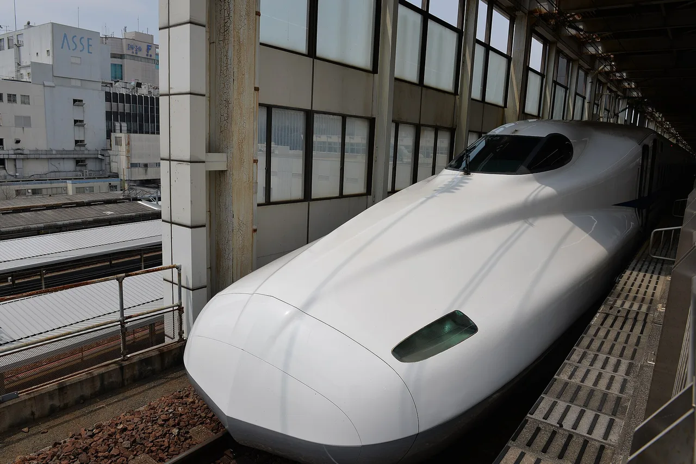
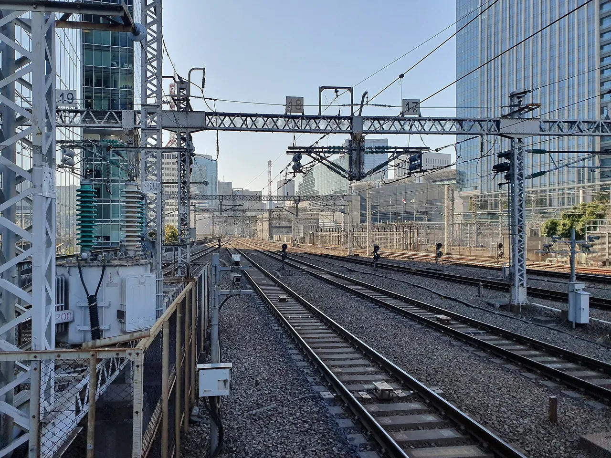

Japan Travel in 2026: Every New Fee, Tax, and Rule
2026 is the year a lot of small numbers moved at once: the departure tax, the JR Pass, the Mount Fuji fee, the way tax-free shopping works, and a wave of city lodging taxes. It does change what you should budget and book before you go. Here is the dated list, with every figure linked to its official source.

We re-priced our own family trips twice while writing this, because the figures genuinely shifted between spring and summer 2026. The good news first: the weak yen still does most of the work. Even with every increase below stacked together, a 2026 trip is cheaper for most foreign visitors than a 2019 trip was, once the exchange rate is in the picture. The changes are real, but they are the kind you absorb by booking the right pass and packing a little more cash.
Quick answers
Q. How much is Japan's departure tax in 2026?
A. The International Tourist Tax rises from ¥1,000 to ¥3,000 per person for departures on or after July 1, 2026. It is built into your airline or ferry ticket, so there is no separate counter to pay it at. Children under 2 years old and transit passengers who leave within 24 hours are exempt.
Q. Did the JR Pass get more expensive?
A. Yes. The nationwide Japan Rail Pass is set to rise again from October 1, 2026, with the 7-day ordinary pass going to about ¥53,000. After the large 2023 increase, the nationwide pass is no longer automatically worth it; a regional JR pass is often cheaper for a single-area trip.
Q. Do I have to pay to climb Mount Fuji now?
A. Yes. All four main trails charge a mandatory ¥4,000 fee in 2026, with an online reservation required. The official climbing season runs roughly early July to September 10.
Q. What changed about tax-free shopping?
A. From November 1, 2026, Japan switches to a refund system: you pay the full price including 10% consumption tax at the register, then claim the refund at the airport before you fly home. The old ¥500,000 consumables cap and the sealed-bag rule are being removed.
The 2026 changes at a glance
Departure tax: ¥1,000 → ¥3,000, from July 1
Japan's International Tourist Tax (国際観光旅客税 / kokusai kankō ryokaku zei), often called the "sayonara tax," has been ¥1,000 per departure since 2019. For departures on or after July 1, 2026, it triples to ¥3,000. The increase was set out in the ruling parties' FY2026 Tax Reform Outline and applies to everyone leaving Japan by air or sea, residents and visitors alike.
You will almost never see it as a separate charge: it is collected inside your airline or ferry ticket price. Two exemptions matter: children under 2 years old, and transit passengers who enter and leave within 24 hours. The official explanation and current rate live on the National Tourism Organization's page. japan.travel — International Tourist Tax · National Tax Agency A transitional rule applies the old ¥1,000 rate to tickets issued on or before June 30, 2026, so only tickets issued from July 1 carry the new ¥3,000.
In practice this is the change you can do nothing about and barely notice, ¥2,000 extra buried in a fare you already paid. We mention it mostly so the number on your receipt doesn't surprise you.
JR Pass: another price rise from October 1

The nationwide Japan Rail Pass took a steep jump in October 2023, and it rises again from October 1, 2026. As announced, the 7-day ordinary pass goes to about ¥53,000 (a ¥3,000 increase), the 7-day Green Car pass to about ¥74,000, and the 21-day ordinary pass to about ¥105,000. Prices and any limited-time sale periods vary by where you buy, so confirm the current figure on the official site; if your dates allow, buying before the increase locks the lower rate. japanrailpass.net
THE REAL JR PASS QUESTION
Since 2023, the nationwide pass only pays off if you cover a lot of long-distance ground in one week, roughly a Tokyo–Kyoto–Hiroshima–Tokyo loop or more. For a single region, a regional JR pass (JR East, JR West Kansai-Hiroshima, JR Kyushu, and others) is usually cheaper and covers everything you'll actually ride. Price your real itinerary on a route planner first, then decide.
If your trip is "Tokyo and day trips," you may not need any rail pass at all, since a mobile IC card and a few individual Shinkansen tickets can come out lower. We break down the cash-versus-card-versus-pass math in our honest cost guide for 2026.
Some links above are affiliate links. We may earn a commission at no extra cost to you. We only list services we'd use ourselves.
Mount Fuji: a ¥4,000 fee and a reservation
Climbing Mount Fuji used to rely on a voluntary ¥1,000 donation. For the 2026 season, all four main trails, Yoshida (Yamanashi side) plus Subashiri, Gotemba, and Fujinomiya (Shizuoka side), charge a mandatory ¥4,000 fee, and you reserve your climbing slot online in advance. The Yoshida trail also caps daily numbers and closes its gate overnight to discourage exhausting "bullet climbs."
The official season is short. In 2026 the Yoshida and Subashiri trails open July 1, Fujinomiya and Gotemba open July 10, and all four close around September 10. Outside that window the trails and mountain huts are closed. Reserve and check dates on the official Mount Fuji climbing site. fujisan-climb.jp
Tax-free shopping becomes a refund, from November 1
This is the change that trips people up, because it inverts the order you're used to. Until now, eligible visitors paid the tax-free (pre-tax) price at the register. From November 1, 2026, you pay the full price including 10% consumption tax in the shop, and then claim the refund at the airport before departure, mostly through self-service kiosks that read your passport and pull up your purchase history automatically.
It is not all extra friction. The new system removes the old ¥500,000 cap on tax-free consumables and the sealed-packaging rule, and unifies the product categories. The catch is timing and cash flow: you front the 10%, and you must complete the airport procedure within 90 days of purchase. Credit-card refunds can take one to two weeks to land. Official details: National Tax Agency · Japan Customs
PLAN FOR THE FRONTED TAX
If you were counting on tax-free pricing for a big purchase (a camera, say), budget the extra 10% as a temporary outlay you'll get back later, and leave airport time to do the refund. Keep your passport and the digital purchase record together, since the kiosk needs them.
Lodging taxes: Kyoto leads, others follow
Many Japanese cities levy a small per-night accommodation tax, and several raised or introduced theirs in 2026. Kyoto's revised tax took effect March 1, 2026, with brackets that scale by room rate, from ¥200 per night in tax for budget rooms up to ¥10,000 per night in tax at the very top room-rate bracket. Other prefectures and cities added or increased lodging taxes through the year, so check your specific city, not just "Japan."
For most travelers this is a few hundred yen per night, charged at check-out. It is worth knowing so it doesn't read as a billing error. Confirm your city's rate on its official site. Kyoto's is published here: Kyoto City — accommodation tax
IC cards, JESTA, and the small stuff
IC cards. Suica, PASMO, and ICOCA still run almost every train, subway, and bus, and pay at convenience stores. After past chip shortages limited the plastic cards, the easiest route for most visitors now is a mobile Suica or PASMO in Apple Wallet or Google Wallet. Set it up before you land and top it up with a card. The Welcome Suica and tourist IC options remain available at airports.
JESTA. Japan has announced a pre-travel electronic authorization system (similar to the US ESTA) for visa-exempt visitors. Timing has shifted, so do not assume it is required for your dates. Check the current status on the official immigration and foreign-ministry sites before you fly. Ministry of Foreign Affairs — visa · Immigration Services Agency
What it adds up to
Stack the unavoidable increases for a typical two-week trip and you get roughly: ¥2,000 more in departure tax, a few hundred yen a night in lodging tax, and (if you climb it) ¥4,000 for Fuji. The JR Pass rise only hits you if you were going to buy the nationwide pass, and for many itineraries the right move in 2026 is to skip it for a regional pass or point-to-point tickets. Against a yen that still gives foreign visitors a deep discount, the net effect is small.
Two follow-ups worth reading before you book: Is Japan expensive in 2026? for the real daily budget, and Cash or card in Japan in 2026 for how much yen to actually carry. Moving here rather than visiting? Start with our practical relocation timeline.
Some links above are affiliate links. We may earn a commission at no extra cost to you. We only list services we'd use ourselves.
Japan National Tourism Organization (JNTO) — International Tourist Tax
National Tax Agency Japan — international tourist tax, consumption tax, tax-free system
Japan Customs — tax-free shopping procedures
Japan Rail Pass (official) — nationwide and regional pass pricing
Official Mount Fuji Climbing site — fee, reservation, trail dates
Kyoto City — accommodation tax
Ministry of Foreign Affairs · Immigration Services Agency — visa and entry rules